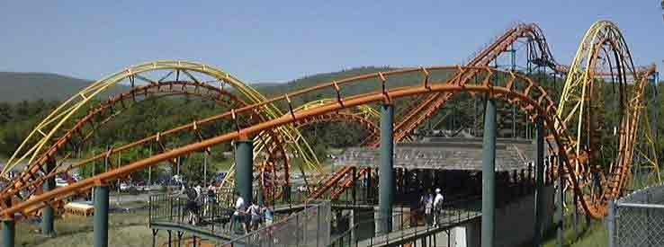
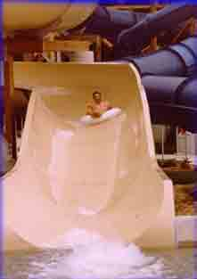
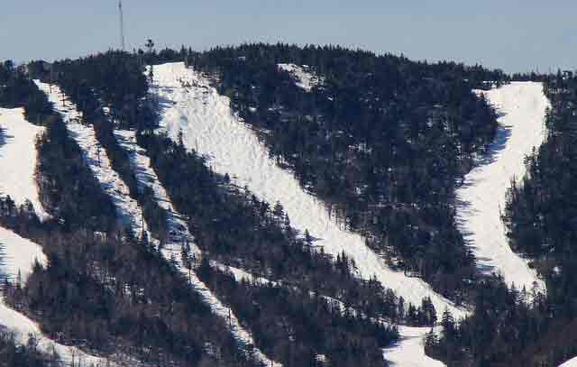
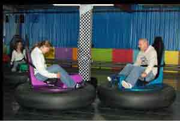

Travel to Lake George Travel to Lake George |
Home >> Things to do >> Attractions
|  | The Great Escape & Splashwater Kingdom1172 State Route 9, Queensbury, NY 12804http://www.sixflags.com/greatescape Over 135 rides, shows, and attractions including a variety of roller coasters and a full outdoor water park! The Great Escape is open May 26; daily beginning June 13. Splashwater Kingdom is open Saturdays and Sundays beginning May 26; daily June 23. |
|  | Waterslide Worldhttp://www.adirondack.net/tour/waterslideworldWater Slide World has more than 35 different water slides and attractions. This medium sized water park has a large wave pool, Fantasy Island activity pool with water volleyball court, two children’s pools and the Amazon Adventure River inner tube ride. |
|  | Gore Mountain Ski Resort793 Peaceful Valley Road, North Creek, NY 12853http://www.goremountain.com |  | Adventure Racing Family Fun Center1079 Route 9, Queensbury, NY 12804http://www.gocartslakegeorge.com Go-Karts, Bumper Cars, Laser Tag, Paintball and Arcade Games make Adventure Racing the Lake George Areas best thrill packed go-kart and family fun center. Bring lots of friends and have a party you will never forget! |